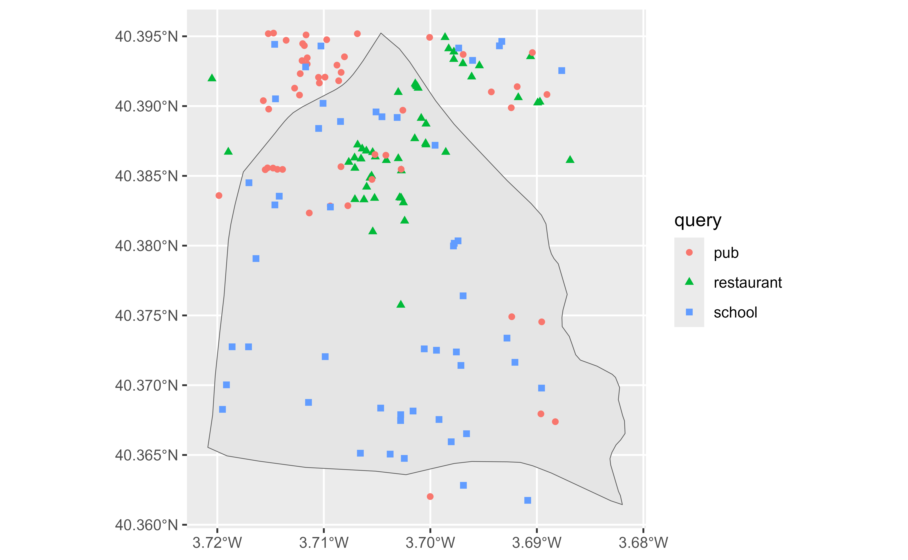

This function search amenities as defined by OpenStreetMap on a restricted area defined by a bounding box in the form of (<min_latitude>, <min_longitude>, <max_latitude>, <max_longitude>).
geo_amenity_sf( bbox, amenity, limit = 1, full_results = FALSE, return_addresses = TRUE, verbose = FALSE, custom_query = list(), points_only = TRUE, strict = FALSE )
Arguments
| bbox | A numeric vector of latitude and longitude (<min_latitude>, <min_longitude>, <max_latitude>, <max_longitude>) that restrict the search area. See Details. |
|---|---|
| amenity | A character of a vector of character with the amenities to be
geolocated (i.e. |
| limit | maximum number of results to return per input address. Note that each query returns a maximum of 50 results. |
| full_results | returns all data from the geocoder service if TRUE. If FALSE then only longitude and latitude are returned from the geocoder service. |
| return_addresses | return input addresses with results if TRUE. Note that
most services return the input addresses with |
| verbose | if TRUE then detailed logs are output to the console |
| custom_query | API-specific parameters to be used.
See |
| points_only | Logical |
| strict | Logical TRUE/FALSE. Force the results to be included inside
the |
Value
A sf object with the results.
Details
Bounding boxes can be located using different online tools, as Bounding Box Tool.
For a full list of valid amenities see https://wiki.openstreetmap.org/wiki/Key:amenity.
See also
Other spatial:
bbox_to_poly(),
geo_address_lookup_sf(),
geo_lite_sf(),
reverse_geo_lite_sf()
Other amenity:
bbox_to_poly(),
geo_amenity(),
osm_amenities
Examples
# \donttest{ # Madrid, Spain library(ggplot2) bbox <- c( -3.888954, 40.311977, -3.517916, 40.643729 ) # Restaurants and pubs rest_pub <- geo_amenity_sf(bbox, c("restaurant", "pub"), limit = 50 ) ggplot(rest_pub) + geom_sf()# Hospital as polygon hosp <- geo_amenity_sf(bbox, "hospital", points_only = FALSE ) ggplot(hosp) + geom_sf()# }